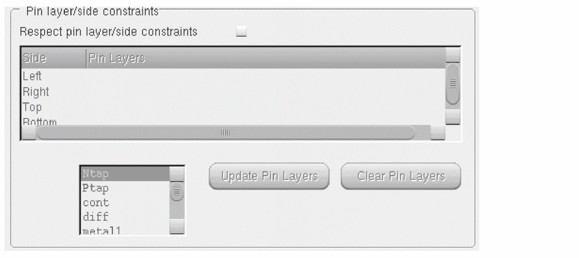

Setting Pin Layer and Side Constraints for Pin Optimization
The Pin layer side constraints are used to switch the pin layer depending on the side of the block on which the pin is placed by Pin Optimizer.
-
Choose Floorplan – Pin Optimization to display the Pin Optimization tab of the Pin Placement form.
In Layout EXL and higher tiers, choose Plan – Pin Planning – Pin Optimization. - Set Mode to All or Selected depending on whether all or some of the pins are selected in the layout.
-
In the Pin layer/side constraints section, you can set the pin layer side constraints by selecting the Respect pin layer/side constraints check box.
You will notice that the two list boxes below the check box are available. By default, these two list boxes are disabled.
The first list box has two columns i.e Side and Pin Layers. Side specifies four different sides as “Left” “Right” “Top” and “Bottom”. Pin Layers specifies one or more pin layers for each side.At advanced nodes, default values are automatically applied to the tables in the Pin layer/side constraints section. The default pin layer/side constraint values are based on thesnapGridVerticalandsnapGridHorizontalconstraints defined in the technology file.
- WSSPDefs withsnapGridVerticalconstraint have tracks intersecting with the left and right edges.
- WSSPDefs withsnapGridHorizontalconstraint have track intersecting with the top and bottom edges. - You can define the pin layers for a side by selecting a pin layer from the list box before the Update Pin Layers button. If no side is specified, then the existing pin layer remains unchanged.
-
To add or update a pin layer for the side, select a pin layer from the list box before the Update Pin Layers button and then click the Update Pin Layers button.
The selected pin layer is displayed in the Pin Layers column in the first list box. - Click Clear Pin Layers if you want to clear the pin layers of the selected side.
During pin optimization, when a pin layer is switched, the pin label associated with the pin is also switched to the same layer on which the pin is changed. However, if the pin layer is not switched, the layer of the pin label will remain unchanged.
Related Topics
Return to top